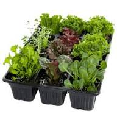

Tres miradas, una misma convicción
Somos tres apasionados del compost, unidos por la convicción de que la tierra puede renacer a partir de lo que muchos consideran desecho.
Para nosotros, el compostaje no es solo una técnica: es un acto de respeto hacia la naturaleza, un compromiso con el ambiente y una forma de devolverle a la tierra lo que nos da cada día.
Datos institucionales
Dato Contenido
Nombre ONG Verde
Objetivo Promover huertas urbanas, compostaje comunitario y educación ambiental.
Área de acción Barrios y comunidades locales que buscan recuperar la relación con la tierra.
Valores Sostenibilidad, cooperación y cuidado del suelo.
Integrantes

Resumen de tareas
| Integrantes | Rol | Tareas principales |
|---|---|---|
| Daniel | Ciencia del compost | - Investigar procesos biológicos - Explicar la transformación de residuos - Transmitir conocimientos científicos |
| Diego | Aplicación práctica | - Usar compost en huertas y jardines - Enseñar técnicas sencillas - Mostrar resultados visibles |
| Ignacio | Conciencia ambiental | - Promover cultura del compost - Organizar talleres comunitarios - Inspirar responsabilidad colectiva |

Raíces de Daniel
Se dedica a explorar la ciencia detrás del compost. Le apasiona entender cómo los microorganismos, la humedad y el tiempo trabajan juntos para transformar restos orgánicos en un suelo rico y fértil. Su mirada aporta el rigor y la curiosidad científica que nos ayuda a explicar el proceso con claridad.
Además de su interés por la ciencia del compost, Daniel disfruta transmitir cómo este proceso es un ejemplo de paciencia y constancia. Para él, cada etapa —desde la recolección de residuos hasta la transformación final en humus— refleja la importancia de respetar los tiempos de la naturaleza. Su visión inspira a comprender que el compostaje no es solo técnica, sino también un aprendizaje sobre la vida misma: esperar, cuidar y valorar lo que parece pequeño, pero que termina siendo esencial.
"El compost me enseñó que la paciencia da frutos"

Semillas de Diego
Encuentra en el compost una herramienta práctica para la vida cotidiana. Su tema es la aplicación en huertas y jardines, mostrando cómo este abono natural mejora el crecimiento de las plantas, fortalece raíces y convierte cualquier espacio verde en un lugar más vivo y productivo.
Su mirada práctica se complementa con la pasión por enseñar a otros cómo incorporar el compost en la rutina diaria. Cree que cada maceta, cada huerta escolar o comunitaria puede convertirse en un laboratorio vivo donde se ve el poder de la tierra regenerada. Su aporte es mostrar que el compost no requiere grandes espacios ni inversiones, sino voluntad y creatividad. Con ejemplos sencillos, demuestra que cualquiera puede empezar a compostar y ver resultados en poco tiempo.
"Cada semilla florece mejor cuando la tierra está viva."

Huellas de Ignacio
Se enfoca en la conciencia ambiental y cultural. Para él, el compost es un símbolo de responsabilidad: reciclar, reducir residuos y enseñar a otros que cada cáscara, cada hoja y cada resto orgánico puede convertirse en vida. Su aporte es inspirar a la comunidad a sumarse a este cambio.
Su enfoque ambiental se expande hacia la construcción de una cultura del compost. Considera que este trabajo es una herramienta para cambiar hábitos y generar conciencia colectiva. Más allá de la técnica, busca que las personas entiendan que compostar es un acto de responsabilidad compartida: cada vecino, cada familia, cada comunidad puede reducir su impacto y devolverle a la tierra lo que necesita. Su mensaje es claro: el compost no solo mejora el suelo, también mejora la relación que tenemos con nuestro entorno.
"Compostar es devolverle a la tierra lo que siempre nos dio."